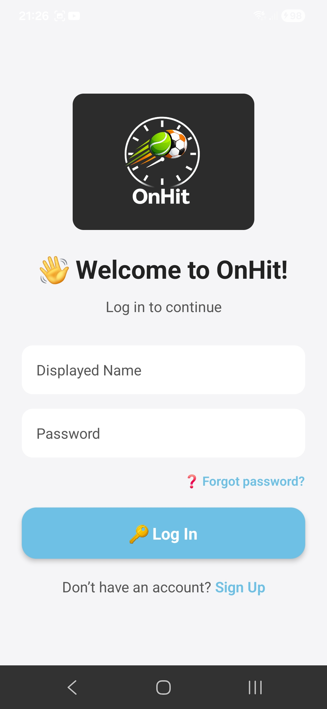

Create Account
To start using the application, you need to create an account.

Logging In
After creating your account, you can log in using your email and password. Tap "Login" on the main screen and enter your credentials.
Basic Navigation
Use the bottom menu to switch between main sections of the app. Each icon represents a different feature such as dashboard, settings, or profile.
Settings
In the settings section, you can update your personal information, change your password, and configure app preferences.